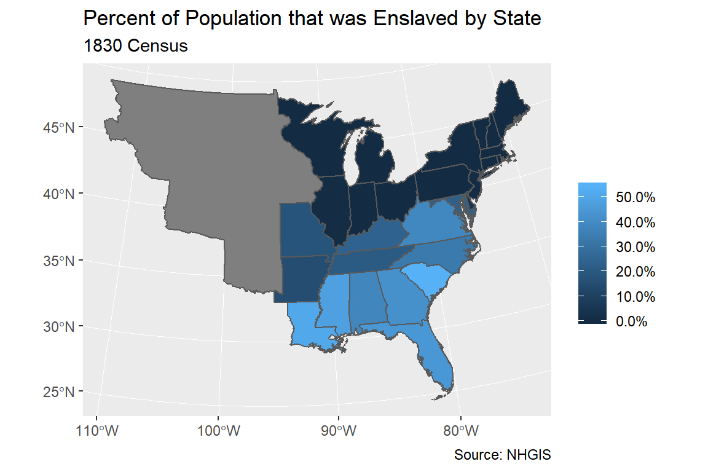

ipumsr Example - NHGISvignettes/ipums-nhgis.Rmd
ipums-nhgis.RmdOBJECTIVE: Gain an understanding of how the NHGIS datasets are structured and how they can be leveraged to explore your research interests. This exercise will use an NHGIS dataset to explore slavery in the United States in 1830.
This vignette is adapted from the NHGIS Data Training Exercise available here: https://pop.umn.edu/sites/pop.umn.edu/files/nhgis_training_ex1_2017-01.pdf
Q1) How many tables are available from the 1830 Census?
Q2) Other than slave status, what are some other topics could we learn about for 1830?
# A: Population that is urban, particular ages, deaf and dumb, blind, and foreign born
# not naturalized.Q3) Click the table name to see additional information. How many variables does this table contain?
Q4) For which geographic levels is the table available?
Q5) Close the table pop‐up window and inspect the Select Data table… What is the universe for this table?
Q6) What differentiates this table from the other available slavery tables from 1830?
Q7) Name a percentage or ratio this table would allow us to calculate that the other tables would not, based on the counts available in each table?
If you refresh your browser window (click on the loop icon at top, or press F5), you will see the extract status change from ‘queued’ to ‘in progress’ to ‘complete’, at which time you will be able to click the ‘tables’ link to download the data.
You will need to change the filepaths noted below to the place where you have saved the extracts.
You will need to change the filepaths noted below to the place where you have saved the extracts.
library(ipumsr)
#> Registered S3 methods overwritten by 'ipumsr':
#> method from
#> format.pillar_shaft_haven_labelled_chr haven
#> format.pillar_shaft_haven_labelled_num haven
#> pillar_shaft.haven_labelled haven
library(sf)
# Change these filepaths to the filepaths of your downloaded extract
nhgis_csv_file <- "nhgis0001_csv.zip"
nhgis_shp_file <- "nhgis0001_shape.zip"nhgis_ddi <- read_ipums_codebook(nhgis_csv_file) # Contains metadata, nice to have as separate object
nhgis <- read_nhgis_sf(
data_file = nhgis_csv_file,
shape_file = nhgis_shp_file
)
#> Use of data from NHGIS is subject to conditions including that users should
#> cite the data appropriately. Use command `ipums_conditions()` for more details.
#>
#>
#> Reading data file...
#> Reading geography...
#> options: ENCODING=latin1
#> Reading layer `US_state_1830' from data source `C:\Users\burkx031\AppData\Local\Temp\Rtmpyyc4MO\file17504f375991\US_state_1830.shp' using driver `ESRI Shapefile'
#> Simple feature collection with 29 features and 7 fields
#> geometry type: MULTIPOLYGON
#> dimension: XY
#> bbox: xmin: -1389608 ymin: -1337508 xmax: 2258225 ymax: 1408188
#> epsg (SRID): NA
#> proj4string: +proj=aea +lat_1=29.5 +lat_2=45.5 +lat_0=37.5 +lon_0=-96 +x_0=0 +y_0=0 +datum=NAD83 +units=m +no_defsNote that read_nhgis_sf relies on package sf. You can also read NHGIS data into the format used by package sp with function read_nhgis_sp.
These exercises include example code written in the “tidyverse” style, meaning that they use the dplyr package. This package provides easy to use functions for data analysis, including mutate(), select(), arrange(), slice() and the pipe (%>%). There a numerous other ways you could solve these answers, including using the base R, the data.table package and others.
Q8) How many states/territories are included in this table?
Q9) Why do you think other states are missing?
table(nhgis$STATE)
#>
#> Alabama Arkansas Territory Connecticut
#> 1 1 1
#> Delaware District Of Columbia Florida Territory
#> 1 1 1
#> Georgia Illinois Indiana
#> 1 1 1
#> Kentucky Louisiana Maine
#> 1 1 1
#> Maryland Massachusetts Michigan Territory
#> 1 1 1
#> Mississippi Missouri New Hampshire
#> 1 1 1
#> New Jersey New York North Carolina
#> 1 1 1
#> Ohio Pennsylvania Rhode Island
#> 1 1 1
#> South Carolina Tennessee Vermont
#> 1 1 1
#> Virginia
#> 1
# A: In 1830, there were not any other states yet! Every decennial census is a
# historical snapshot, and NHGIS provides census counts just as they were
# originally reported without "filling in" any information for newer areas.Q10) Create a new variable called total_pop, with the total population for each state, by summing the counts in columns ABO001 to ABO006. Which state had the largest population?
nhgis <- nhgis %>%
mutate(total_pop = ABO001 + ABO002 + ABO003 + ABO004 + ABO005 + ABO006)
nhgis %>%
as.data.frame() %>%
select(STATE, total_pop) %>%
arrange(desc(total_pop)) %>%
slice(1:5)
#> STATE total_pop
#> 1 New York 1913006
#> 2 Pennsylvania 1348233
#> 3 Virginia 1211405
#> 4 Ohio 937903
#> 5 North Carolina 737987
# A: New YorkQ11) Create a variable called slave_pop, with the total slave population by summing the variables ABO003 and ABO004. Which state had the largest slave population?
nhgis <- nhgis %>%
mutate(slave_pop = ABO003 + ABO004)
nhgis %>%
as.data.frame() %>%
select(STATE, slave_pop) %>%
arrange(desc(slave_pop)) %>%
slice(1:5)
#> STATE slave_pop
#> 1 Virginia 469757
#> 2 South Carolina 315401
#> 3 North Carolina 245601
#> 4 Georgia 217531
#> 5 Kentucky 165213
# A: Virginia Q12) Create a variable called pct_slave with the Slave Population divided by the Total Population. Which states had the highest and lowest Percent Slave Population?
nhgis <- nhgis %>%
mutate(pct_slave = slave_pop / total_pop)
nhgis %>%
as.data.frame() %>%
select(STATE, pct_slave) %>%
filter(pct_slave %in% c(min(pct_slave, na.rm = TRUE), max(pct_slave, na.rm = TRUE)))
#> STATE pct_slave
#> 1 Vermont 0.0000000
#> 2 South Carolina 0.5426861
# A: South Carolina (54.27%) and Vermont (0.00%)Q13) Are there any surprises, or is it as you expected?
nhgis %>%
as.data.frame() %>%
filter(pct_slave > 0.5) %>%
select(STATE, slave_pop, total_pop, pct_slave)
#> STATE slave_pop total_pop pct_slave
#> 1 South Carolina 315401 581185 0.5426861
#> 2 Louisiana 109588 215529 0.5084606
nhgis %>%
as.data.frame() %>%
filter(STATE %in% c("New York", "New Jersey")) %>%
select(STATE, slave_pop, total_pop, pct_slave)
#> STATE slave_pop total_pop pct_slave
#> 1 New York 75 1913006 3.920531e-05
#> 2 New Jersey 2254 320823 7.025681e-03
# A: Possibilities: Did you know some states had more slaves than free persons? Did
# you know that some “free states” were home to substantial numbers of slaves?Open the .txt codebook file that is in the same folder as the comma delimited file you have already analyzed. The codebook file is a valuable reference containing information about the table or tables you’ve downloaded.
Some of the information provided in the codebook can be read into R, using the function read_ipums_codebook().
Q14) What is the proper citation to provide when using NHGIS data in publications or researcher reports?
cat(ipums_file_info(nhgis_ddi, "conditions"))
#>
#> All persons are granted a limited license to use this documentation and the
#> accompanying data, subject to the following conditions:
#>
#> * Publications and research reports employing NHGIS data (either tabular or GIS)
#> must cite it appropriately. The citation should include the following:
#>
#> Steven Manson, Jonathan Schroeder, David Van Riper, and Steven Ruggles.
#> IPUMS National Historical Geographic Information System: Version 12.0 [Database].
#> Minneapolis: University of Minnesota. 2017.
#> http://doi.org/10.18128/D050.V12.0
#>
#> * Publications and research reports employing school attendance areas data
#> (either tabular or GIS) must cite it appropriately. The citation should
#> include the following:
#>
#> The College of William and Mary and the Minnesota Population Center.
#> School Attendance Boundary Information System (SABINS): Version 1.0.
#> Minneapolis, MN: University of Minnesota 2011.
#>
#> * For policy briefs or articles in the popular press, we recommend that you cite the use of NHGIS data as follows:
#>
#> IPUMS NHGIS, University of Minnesota, www.nhgis.org.
#>
#> * If possible, citations involving school attendance areas should also include
#> the URL for the SABINS site:
#>
#> http://www.sabinsdata.org/.
#>
#> In addition, we request that users send us a copy of any publications, research
#> reports, or educational material making use of the data or documentation.
#> Printed matter should be sent to:
#>
#> NHGIS
#> Minnesota Population Center
#> University of Minnesota
#> 50 Willey Hall
#> 225 19th Ave S
#> Minneapolis, MN 55455
# A: Minnesota Population Center. National Historical Geographic Information
# System: Version 11.0 [Database]. Minneapolis: University of Minnesota. 2016.
# http://doi.org/10.18128/D050.V11.0.Q15) What is the email address for NHGIS to share any research you have published? (You can also send questions you may have about the site. We’re happy to help!)
One of the reasons we are excited about bringing IPUMS data to R is the GIS capabilities available for free in R.
Q16) Make a map of the percent of the population that are slaves.
library(ggplot2)
#> Registered S3 methods overwritten by 'ggplot2':
#> method from
#> [.quosures rlang
#> c.quosures rlang
#> print.quosures rlang
ggplot(data = nhgis, aes(fill = pct_slave)) +
geom_sf() +
scale_fill_continuous("", labels = scales::percent) +
labs(
title = "Percent of Population that was Enslaved by State",
subtitle = "1830 Census",
caption = paste0("Source: ", ipums_file_info(nhgis_ddi, "ipums_project"))
)